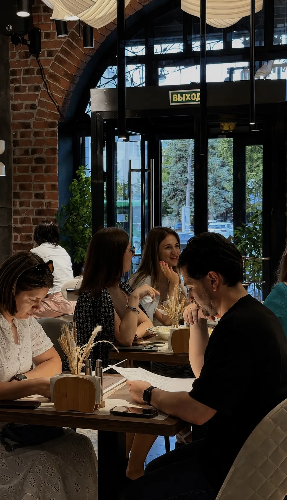
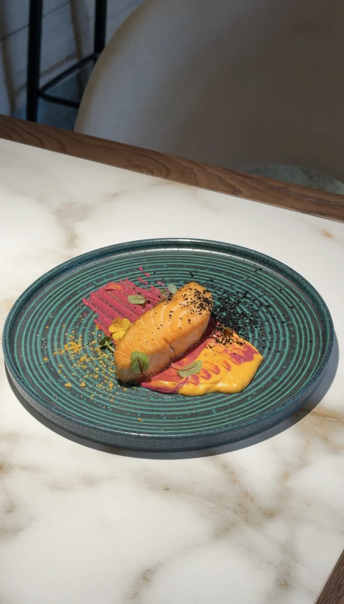
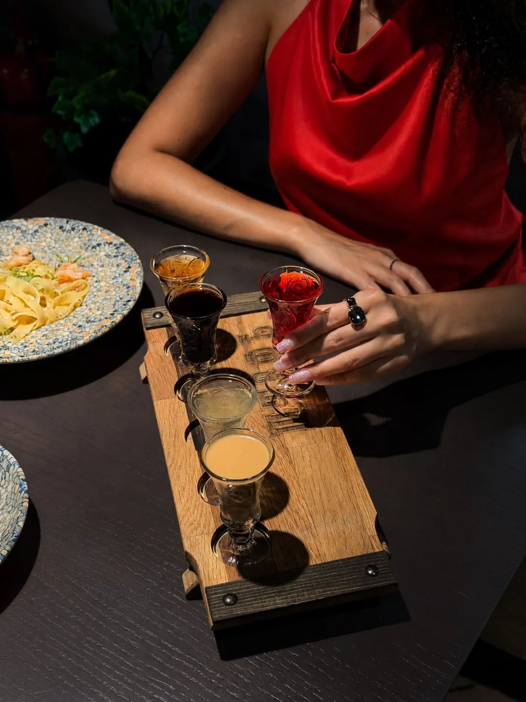
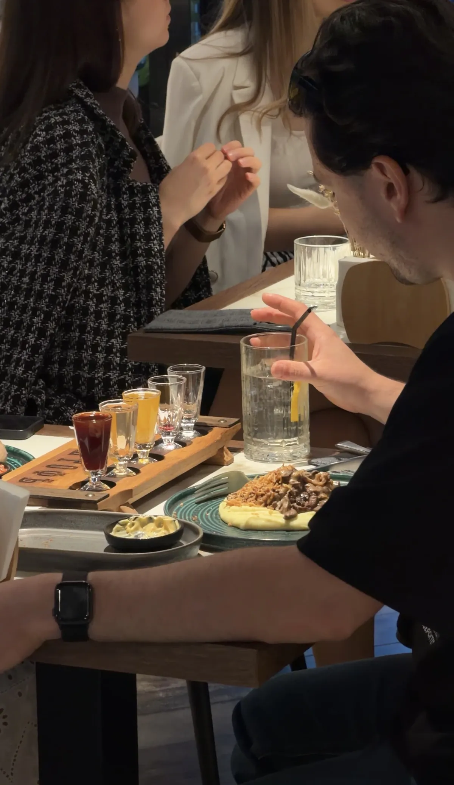

II
Вечер в ШТОФЪ
заходите, мы уже накрыли стол






Штофъ — старинная русская мера и гранёная бутыль в «десятую часть ведра». У нас больше 56 вкусов собственного настаивания — на кедровом орехе, уральской облепихе, мёде и таёжных травах. Осталось только найти свой.

До революции штофом называли и меру крепких напитков — десятую часть ведра, и саму гранёную бутыль тёмного стекла, в которой водку и настойки подавали в трактирах. За штофом собирались, спорили, мирились и пели — он был мерой беседы, а не опьянения.
Мы назвали ресторан в честь этой меры и наполняем её заново: настаиваем крепкое на кедровом орехе и облепихе, варим уху с водкой и лепим пельмени, как заведено на Урале. Всё честно: натуральные ингредиенты, выдержка 30–50 дней, ни грамма ароматизаторов. Мы не продаём настойки — мы создаём повод встретиться.
Найти нас просто — исторический центр Екатеринбурга, «Мытный двор» на 8 Марта. Там, где двести лет назад собирали пошлину с купцов, теперь наливают по-честному. Здесь собираются за хорошими разговорами, вкусной кухней и тем настроением, которое хочется сохранить подольше.



Есть люди, которые выбирают настойку по названию. А есть те, кто доверяет бармену. Скажите одно слово — «сладкая», «ягодная» или «покрепче» — и мы соберём сет под вас.
вино — бокал 125 мл / бутылка 0,75 л
крепкий алкоголь — порция 50 мл